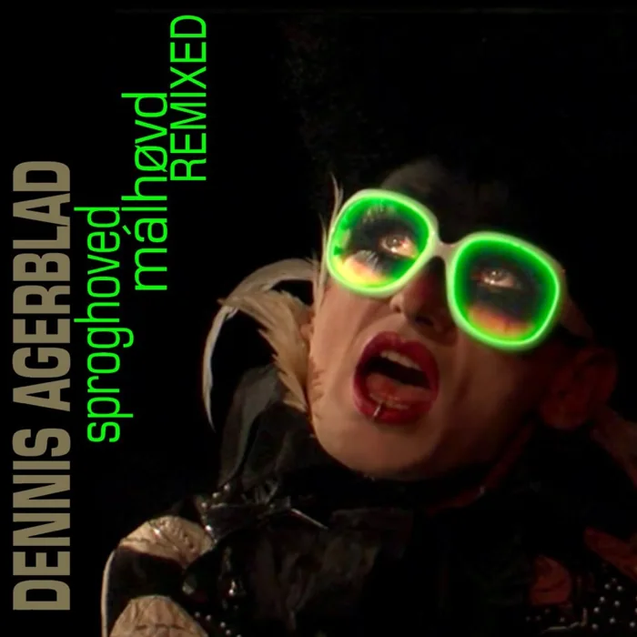
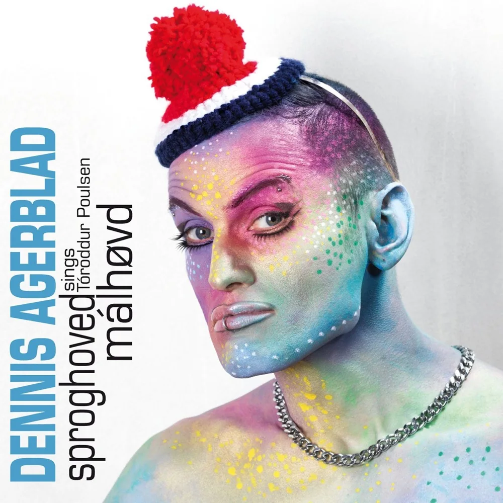
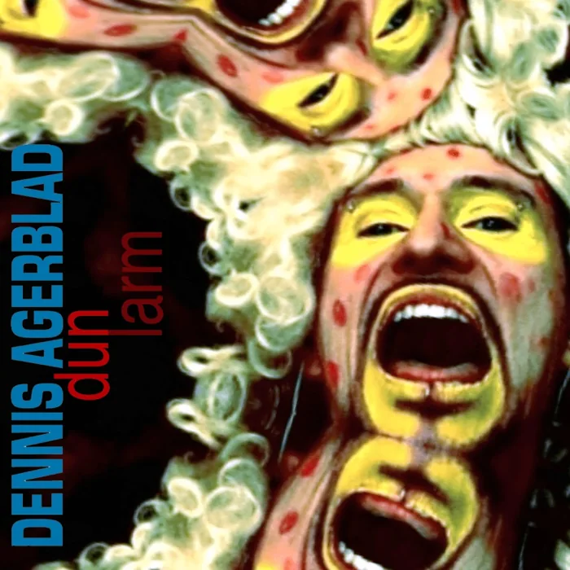

Sproghoved / Málhøvd REMIXED
Single
Hør singlen på Bandcamp ↗
På mit første soloalbum har jeg lavet elektronisk musik til den færøske digter Tóroddur Poulsens digte.
Dobbeltalbummet indeholder 12 sange på færøsk og de samme 12 sange på dansk. Du vælger selv, hvilket sprog du vil høre det på.
Jeg har en masse digtsamlinger stående af den færøske digter Tóroddur Poulsen. En dag, da jeg læste et af hans digte, stod der:
“Siden skal du sende mig en sang lige som denne.”
Jeg tænkte, at det var en sjov sætning for mig, når jeg nu skrev sange. Jeg lavede musik til digtet og sendte sangen som MP3 til Tóroddur Poulsen, som straks svarede:
“Forbannet godt, lav flere.”
Så fik jeg blod på tanden. Jeg læste alle hans digte igennem og valgte i alt 12, som blev til sangene på albummet Málhøvd.
Da jeg havde komponeret musikken og fået Mathuresh til at mixe og producere hele albummet, spillede jeg musikken for mine venner i København. De sagde:
“Hvor lyder det fedt, men hvad synger du? Kan du ikke oversætte det til dansk?”
Så oversatte jeg det hele, men der var ét vers, jeg ikke kunne oversætte. Jeg tog hjem til Tóroddur Poulsen og viste ham mine oversættelser. Han kunne heller ikke oversætte det vers, der drillede.
“Jeg skriver dig et nyt vers på dansk,” sagde han.
Og sådan blev den danske version, Sproghoved, født. Det er et dobbeltalbum, hvor man vælger, hvilket sprog man vil høre det på.

Single
Hør singlen på Bandcamp ↗
Single
Hør singlen på Bandcamp ↗Til albummet hører også to singler: titelnummeret Sproghoved / Málhøvd REMIXED og Dun / Larm REMIXED.
CD’en blev udgivet af det færøske pladeselskab TUTL, mens den digitale udgivelse kom på mit eget pladeselskab Tunga musiK.